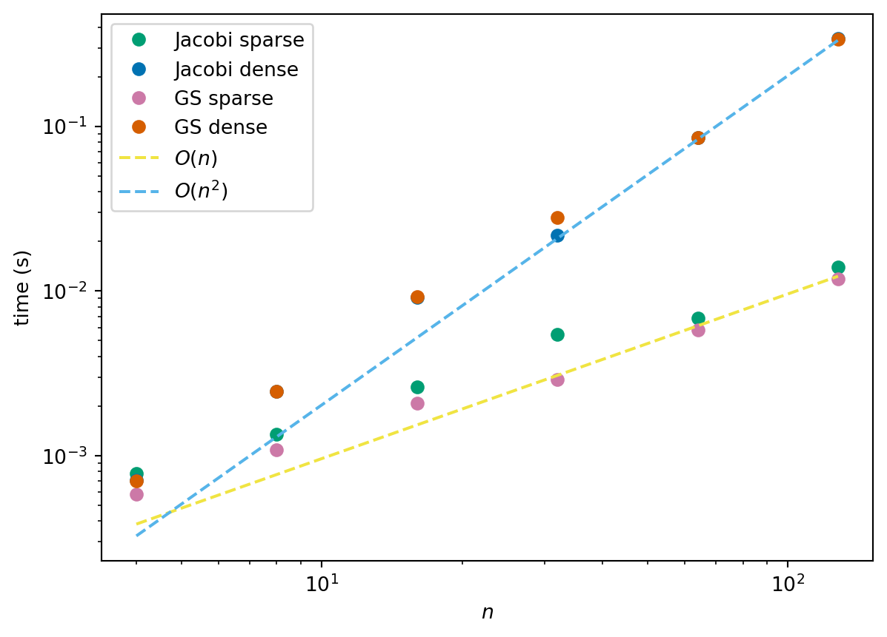

def jacobi_iteration(A, b, x0, max_iter, verbose=False):
"""
Solve a linear system Ax = b using the Jacobi iterative method.
The Jacobi method is an iterative algorithm for solving the linear system:
.. math::
Ax = b
starting from an initial guess ``x0``. At each iteration, the solution is
updated according to:
.. math::
x_i^{(k+1)} = x_i^{(k)} + \\frac{1}{A_{ii}} \\left( b_i -
\\sum_{j=0}^{n-1} A_{ij} x_j^{(k)} \\right)
Parameters
----------
A : numpy.ndarray
A 2D NumPy array of shape ``(n, n)`` representing the coefficient
matrix.
b : numpy.ndarray
A 1D or 2D NumPy array of shape ``(n,)`` or ``(n, 1)`` representing the
right-hand side vector.
x0 : numpy.ndarray
Initial guess for the solution, same shape as ``b``.
max_iter : int
Maximum number of iterations to perform.
verbose : bool, optional
If ``True``, prints the value of the solution vector at each iteration.
Default is ``False``.
Returns
-------
x : numpy.ndarray
Approximated solution vector after ``max_iter`` iterations.
"""
n = system_size(A, b)
x = x0.copy()
xnew = np.empty_like(x)
if verbose:
print("starting value: ", end="")
print_array(x.T, "x.T")
for iter in range(max_iter):
for i in range(n):
Axi = 0.0
for j in range(n):
Axi += A[i, j] * x[j]
xnew[i] = x[i] + 1.0 / (A[i, i]) * (b[i] - Axi)
x = xnew.copy()
if verbose:
print(f"after {iter=}: ", end="")
print_array(x.T, "x.T")
return x
def gauss_seidel_iteration(A, b, x0, max_iter, verbose=False):
"""
Solve a linear system Ax = b using the Gauss-Seidel iterative method.
The Gauss-Seidel method is an iterative algorithm for solving the linear
system:
.. math::
Ax = b
starting from an initial guess ``x0``. At each iteration, the solution is
updated sequentially using the most recently computed values:
.. math::
x_i^{(k+1)} = x_i^{(k)} + \\frac{1}{A_{ii}} \\left( b_i -
\\sum_{j=0}^{i-1} A_{ij} x_j^{(k+1)} -
\\sum_{j=i}^{n-1} A_{ij} x_j^{(k)} \\right)
Parameters
----------
A : numpy.ndarray
A 2D NumPy array of shape ``(n, n)`` representing the coefficient
matrix.
b : numpy.ndarray
A 1D or 2D NumPy array of shape ``(n,)`` or ``(n, 1)`` representing the
right-hand side vector.
x0 : numpy.ndarray
Initial guess for the solution, same shape as ``b``.
max_iter : int
Maximum number of iterations to perform.
verbose : bool, optional
If ``True``, prints the value of the solution vector at each iteration.
Default is ``False``.
Returns
-------
x : numpy.ndarray
Approximated solution vector after ``max_iter`` iterations.
"""
n = system_size(A, b)
x = x0.copy()
xnew = np.empty_like(x)
if verbose:
print("starting value: ", end="")
print_array(x.T, "x.T")
for iter in range(max_iter):
for i in range(n):
Axi = 0.0
for j in range(i):
Axi += A[i, j] * xnew[j]
for j in range(i, n):
Axi += A[i, j] * x[j]
xnew[i] = x[i] + 1.0 / (A[i, i]) * (b[i] - Axi)
x = xnew.copy()
if verbose:
print(f"after {iter=}: ", end="")
print_array(x.T, "x.T")
return x5 Iterative solutions of linear equations
5.1 Iterative methods
In the previous section we looked at what are known as direct methods for solving systems of linear equations. They are guaranteed to solve with a fixed amount of work (we can even prove this in exact arithmetic!), but this fixed amount of work may be very large.
For a general \(n \times n\) system of linear equations \(A \vec{x} = \vec{b}\), the computation expense of all direct methods if \(O(n^3)\). The amount of storage required for these approaches is \(O(n^2)\) which is dominated by the cost of storing the matrix \(A\). As \(n\) becomes larger the storage and computation work required limit the practicality of direct approaches.
As an alternative, we will propose some iterative methods. Iterative methods produce a sequence \((\vec{x}^{(k)})\) of approximations to the solution of the linear system of equations \(A \vec{x} = \vec{b}\). The iteration is defined recursively and is typically of the form: \[ \vec{x}^{(k+1)} = \vec{F}(\vec{x}^{(k)}), \] where \(\vec{x}^{(k)}\) is now a vector of values and \(\vec{F}\) is some vector function (which needs to be defined to define the method). We will need to choose a starting value \(\vec{x}^{(k)}\) but there is often a reasonable approximation which can be used. Once all this is defined, we still need to decide when we need to stop!
Remark 5.1. We use a value in brackets in the superscript to denote the iteration number to avoid confusion between the iteration number and the component of the vector: \[ \vec{x}^{(k)} = (\vec{x}^{(k)}_1, \vec{x}^{(k)}_2, \ldots, \vec{x}^{(k)}_n). \]
Example 5.1 (Some terrible examples) These are examples of potential iterative methods which would not work very well!
Consider
\[ \vec{F}(\vec{x}^{(k)}) = \vec{x}^{(k)}. \]
Each iteration is very cheap to compute but very inaccurate - it never converges!
Consider
\[ \vec{F}(\vec{x}^{(k)}) = \vec{x}^{(k)} + A^{-1} (\vec{b} - A \vec{x}^{(k)}). \]
Each iteration is very expensive to compute - you have to invert \(A\)! - but it converges in just one step since
\[ \begin{aligned} A \vec{x}^{(k+1)} & = A \vec{x}^{(k)} + A A^{-1} (\vec{b} - A \vec{x}^{(k)}) \\ & = A \vec{x}^{(k)} + \vec{b} - A \vec{x}^{(k)} \\ & = \vec{b}. \end{aligned} \]
The key point here is that we want a method that is both computationally cheap and converges quickly to the solution. One way to do this is to construct an iteration given by
\[\begin{equation} \label{eq:general-iteration} \vec{F}(\vec{x}^{(k)}) = \vec{x}^{(k)} + P (\vec{b} - A \vec{x}^{(k)}). \end{equation}\]
for some matrix \(P\) such that
- \(P\) is easy to compute, or the matrix-vector product \(\vec{r} \mapsto P \vec{r}\) is easy to compute,
- \(P\) approximates \(A^{-1}\) well enough that the algorithm converges in few iterations.
We call \(\vec{b} - A \vec{x}^{(k)} = \vec{r}\) the residual. Note that the above bad examples could be written in the form of \(\eqref{eq:general-iteration}\) with \(P = O\) (the zero matrix) or \(P = A^{-1}\).
5.2 Jacobi iteration
One straightforward choice for \(P\) in \(\eqref{eq:general-iteration}\) is given by the Jacobi method where we take \(P = D^{-1}\) where \(D\) is the diagonal of \(A\): \[ D_{ii} = A_{ii} \quad \text{and} \quad D_{ij} = 0 \text{ for } i \neq j. \]
The Jacobi iteration is given by
\[ \vec{x}^{(k+1)} = \vec{x}^{(k)} + D^{-1}(\vec{b} - A \vec{x}^{(k)}) \]
\(D\) is a diagonal matrix, so \(D^{-1}\) is trivial to form (as long as the diagonal entries are all non-zero): \[ (D^{-1})_{ii} = \frac{1}{D_{ii}} \quad \text{and} \quad (D^{-1})_{ij} = 0 \text{ for } i \neq j. \]
Remark.
The cost of one iteration is \(O(n^2)\) for a full matrix, and this is dominated by the matrix-vector product \(A \vec{x}^{(k)}\).
This cost can be reduced to \(O(n)\) if the matrix \(A\) is sparse - this is when iterative methods are especially attractive (Example 3.8).
The amount of work also depends on the number of iterations required to get a “satisfactory” solution.
- The number of iterations depends on the matrix;
- Fewer iterations are needed for a less accurate solution;
- A good initial estimate \(\vec{x}^{(0)}\) reduces the required number of iterations.
- The number of iterations depends on the matrix;
Unfortunately, the iteration might not converge!
The Jacobi iteration updates all elements of \(\vec{x}^{(k)}\) simultaneously to get \(\vec{x}^{(k+1)}\). Writing the method out component by component gives
\[\begin{align*} x_1^{(k+1)} &= x_1^{(k)} + \frac{1}{A_{11}} \left( b_1 - \sum_{j=1}^n A_{1j} x_j^{(k)} \right) \\ x_2^{(k+1)} &= x_2^{(k)} + \frac{1}{A_{22}} \left( b_2 - \sum_{j=1}^n A_{2j} x_j^{(k)} \right) \\ \vdots \quad & \hphantom{=} \quad \vdots \\ x_n^{(k+1)} &= x_n^{(k)} + \frac{1}{A_{nn}} \left( b_n - \sum_{j=1}^n A_{nj} x_j^{(k)} \right). \end{align*}\]
Note that once the first step has been taken, \(x_1^{(k+1)}\) is already known, but the Jacobi iteration does not make use of this information!
Example 5.2 Take two iterations of Jacobi iteration to approximate the solution of the following system using the initial guess \(\vec{x}^{(0)} = (1, 1)^T\): \[ \begin{pmatrix} 2 & 1 \\ -1 & 4 \end{pmatrix} \begin{pmatrix} x_1 \\ x_2 \end{pmatrix} = \begin{pmatrix} 3.5 \\ 0.5 \end{pmatrix} \]
Starting from \(\vec{x}^{(0)} = (1, 1)^T\), the first iteration is \[ \begin{aligned} x_1^{(1)} &= x_1^{(0)} + \frac{1}{A_{11}} \left( b_1 - A_{11} x_1^{(0)} - A_{12} x_2^{(0)} \right) \\ &= 1 + \frac{1}{2} (3.5 - 2 \times 1 - 1 \times 1) = 1.25 \\ x_2^{(1)} &= x_2^{(0)} + \frac{1}{A_{22}} \left( b_2 - A_{21} x_1^{(0)} - A_{22} x_2^{(0)} \right) \\ &= 1 + \frac{1}{4} (0.5 - (-1) \times 1 - 4 \times 1) = 0.375. \\ \end{aligned} \] So we have \(\vec{x}^{(1)} = (1.25, 0.375)^T\). Then the second iteration is \[ \begin{aligned} x_1^{(2)} &= x_1^{(1)} + \frac{1}{A_{11}} \left( b_1 - A_{11} x_1^{(1)} - A_{12} x_2^{(1)} \right) \\ &= 1.25 + \frac{1}{2} (3.5 - 2 \times 1.25 - 1 \times 0.375) = 1.5625 \\ x_2^{(2)} &= x_2^{(1)} + \frac{1}{A_{22}} \left( b_2 - A_{21} x_1^{(1)} - A_{22} x_2^{(1)} \right) \\ &= 0.375 + \frac{1}{4} (0.5 - (-1) \times 1.25 - 4 \times 0.375) = 0.4375. \\ \end{aligned} \] So we have \(\vec{x}^{(2)} = (1.5625, 0.4375)\).
Note the only difference between the formulae for Iteration 1 and 2 is the iteration number, the superscript in brackets. The exact solution is given by \(\vec{x} = (1.5, 0.5)^T\).
We note that we can also slightly simplify the way the Jacobi iteration is written. We can expand \(A\) into \(A = L + D + U\), where \(L\) and \(U\) are the parts of the matrix from below and above the diagonal respectively: \[ L_{ij} = \begin{cases} A_{ij} &\quad \text{if } i < j \\ 0 &\quad \text{if } i \ge j, \end{cases} \qquad U_{ij} = \begin{cases} A_{ij} &\quad \text{if } i > j \\ 0 &\quad \text{if } i \le j. \end{cases} \] Then we can calculate that: \[ \begin{aligned} \vec{x}^{(k+1)} & = \vec{x}^{(k)} + D^{-1}(\vec{b} - A \vec{x}^{(k)}) \\ & = \vec{x}^{(k)} + D^{-1}(\vec{b} - (L + D + U) \vec{x}^{(k)}) \\ & = \vec{x}^{(k)} - D^{-1} D \vec{x}^{(k)} + D^{-1}(\vec{b} - (L + U) \vec{x}^{(k)}) \\ & = \vec{x}^{(k)} - \vec{x}^{(k)} + D^{-1}(\vec{b} - (L + U) \vec{x}^{(k)}) \\ & = D^{-1}(\vec{b} - (L + U) \vec{x}^{(k)}). \end{aligned} \] In this formulation, we do not explicitly form the residual as part of the computations. In practical situations, this may be a simpler formulation we can use if we have knowledge of the coefficients of \(A\), rather than just the matrix-vector product.
5.3 Gauss-Seidel iteration
As an alternative to Jacobi iteration, the iteration might use \(x_i^{(k+1)}\) as soon as it is calculated (rather than using the previous iteration), giving
\[\begin{align*} x_1^{(k+1)} & = x_1^{(k)} + \frac{1}{A_{11}} \left( b_1 - \sum_{j=1}^n A_{1j} x_j^{(k)} \right) \\ x_2^{(k+1)} & = x_2^{(k)} + \frac{1}{A_{22}} \left( b_2 - A_{21} x_1^{(k+1)} - \sum_{j=2}^n A_{2j} x_j^{(k)} \right) \\ x_3^{(k+1)} & = x_3^{(k)} + \frac{1}{A_{33}} \left( b_3 - \sum_{j=1}^2 A_{3j} x_j^{(k+1)} - \sum_{j=3}^n A_{3j} x_j^{(k)} \right) \\ \vdots \quad & \hphantom{=} \quad \vdots \\ x_i^{(k+1)} & = x_i^{(k)} + \frac{1}{A_{ii}} \left( b_i - \sum_{j=1}^{i-1} A_{ij} x_j^{(k+1)} - \sum_{j=i}^n A_{ij} x_j^{(k)} \right) \\ \vdots \quad & \hphantom{=} \quad \vdots \\ x_n^{(k+1)} & = x_n^{(k)} + \frac{1}{A_{nn}} \left( b_n - \sum_{j=1}^{n-1} A_{nj} x_j^{(k+1)} - A_{nn} x_n^{(k)} \right). \end{align*}\]
Consider the system \(A \vec{x}= b\) with the matrix \(A\) split as \(A = L + D + U\), where \(D\) is the diagonal of \(A\), \(L\) contains the elements below the diagonal, and \(U\) contains the elements above the diagonal. The componentwise iteration above can be written in matrix form as \[ \begin{aligned} \vec{x}^{(k+1)} & = \vec{x}^{(k)} + D^{-1} (\vec{b} - L \vec{x}^{(k+1)} - (D + U) \vec{x}^{(k)}) \\ & = \vec{x}^{(k)} - D^{-1} L \vec{x}^{(k+1)} + D^{-1} (\vec{b} - (D + U) \vec{x}^{(k)}) \\ & = \vec{x}^{(k)} - D^{-1} L \vec{x}^{(k+1)} + D^{-1} L \vec{x}^{(k)} + D^{-1} (\vec{b} - (L + D + U) \vec{x}^{(k)}) \\ \vec{x}^{(k+1)} + D^{-1} L \vec{x}^{(k+1)} & = \vec{x}^{(k)} + D^{-1} L \vec{x}^{(k)} + D^{-1} (\vec{b} - (L + D + U) \vec{x}^{(k)}) \\ D^{-1} (D + L) \vec{x}^{(k+1)} & = D^{-1} (D + L) \vec{x}^{(k)} + D^{-1} (\vec{b} - A \vec{x}^{(k)}) \\ (D + L) \vec{x}^{(k+1)} &= D D^{-1} (D + L) \vec{x}^{(k)} + D D^{-1} (\vec{b} - A \vec{x}^{(k)}) \\ & = (D + L) \vec{x}^{(k)} + (\vec{b} - A \vec{x}^{(k)}) \\ \vec{x}^{(k+1)} &= (D + L)^{-1} (D + L) \vec{x}^{(k)} + (D + L)^{-1} (\vec{b} - A \vec{x}^{(k)}) \\ & = \vec{x}^{(k)} + (D + L)^{-1} (\vec{b} - A \vec{x}^{(k)}). \end{aligned} \]
…and hence the Gauss-Seidel iteration
\[ \vec{x}^{(k+1)} = \vec{x}^{(k)} + (D + L)^{-1} (\vec{b} - A \vec{x}^{(k)}). \] That is, we use \(P = (D+L)^{-1}\) in \(\eqref{eq:general-iteration}\).
In general, we do not form the inverse of \(D + L\) explicitly here since it is more complicated to do so than simply computing the inverse of \(D\).
Example 5.3 Take two iterations of Gauss-Seidel iteration to approximate the solution of the following system using the initial guess \(\vec{x}^{(0)} = (1, 1)^T\):
\[ \begin{pmatrix} 2 & 1 \\ -1 & 4 \end{pmatrix} \begin{pmatrix} x_1 \\ x_2 \end{pmatrix} = \begin{pmatrix} 3.5 \\ 0.5 \end{pmatrix} \]
Starting from \(\vec{x}^{(0)} = (1, 1)^T\) we have
Iteration 1:
\[ \begin{aligned} x^{(1)}_1 & = x^{(0)}_1 + \frac{1}{A_{11}} (b_1 - A_{11} x^{(0)}_1 - A_{12} x^{(0)}_2) \\ & = 1 + \frac{1}{2} (3.5 - 2 \times 1 - 1 \times 1) = 1.25 \\ x^{(1)}_2 & = x^{(0)}_2 + \frac{1}{A_{22}} (b_2 - A_{21} x^{(1)}_1 - A_{22} x^{(0)}_2) \\ & = 1 + \frac{1}{4} (0.5 - (-1) \times 1.25 - 4 \times 1) = 0.4375. \end{aligned} \]
Iteration 2:
\[ \begin{aligned} x^{(2)}_1 & = x^{(1)}_1 + \frac{1}{A_{11}} (b_1 - A_{11} x^{(1)}_1 a - A_{12} x^{(1)}_2) \\ & = 1.25 + \frac{1}{2} (3.5 - 2 \times 1.25 - 1 \times 0.4375) = 1.53125 \\ x^{(2)}_2 & = x^{(1)}_2 + \frac{1}{A_{22}} (b_2 - A_{21} x^{(2)}_1 - A_{22} x^{(1)}_2) \\ & = 0.4375 + \frac{1}{4} (0.5 - (-1) \times 1.53125 - 4 \times 0.4375) = 0.5078125. \end{aligned} \]
Again, note the changes in the iteration number on the right-hand side of these equations, especially the differences against the Jacobi method.
- What happens if the initial estimate is altered to \(\vec{x}^{(0)} = (2, 1)^T\).
Exercise 5.1 Take one iteration of (a) Jacobi iteration; (b) Gauss-Seidel iteration to approximate the solution of the following system using the initial guess \(\vec{x}^{(0)} = (0, 1, 1)^T\):
\[ \begin{pmatrix} 1 & -2 & 4 \\ -1 & -2 & -1 \\ -1 & -5 & 1 \end{pmatrix} \begin{pmatrix} x_1 \\ x_2 \\ x_3 \end{pmatrix} = \begin{pmatrix} -3 \\ 4 \\ 5 \end{pmatrix}. \]
Remark.
Here, both methods converge, but relatively slowly. They might not converge at all!
We will discuss convergence and when to stop later.
The Gauss-Seidel iteration generally out-performs the Jacobi iteration.
Performance can depend on the order in which the equations are written.
Both iterative algorithms can be made faster and more efficient for sparse systems of equations (far more than direct methods).
5.4 Python version of iterative methods
jacobi iteration
starting value: x.T = [ 1.0, 1.0 ]
after iter=0: x.T = [ 1.250, 0.375 ]
after iter=1: x.T = [ 1.5625, 0.4375 ]
after iter=2: x.T = [ 1.53125, 0.51562 ]
after iter=3: x.T = [ 1.49219, 0.50781 ]
after iter=4: x.T = [ 1.49609, 0.49805 ]
gauss seidel iteration
starting value: x.T = [ 1.0, 1.0 ]
after iter=0: x.T = [ 1.2500, 0.4375 ]
after iter=1: x.T = [ 1.53125, 0.50781 ]
after iter=2: x.T = [ 1.49609, 0.49902 ]
after iter=3: x.T = [ 1.50049, 0.50012 ]
after iter=4: x.T = [ 1.49994, 0.49998 ]
5.5 Sparse Matrices
We met sparse matrices as an example of a special matrix format when we first thought about systems of linear equations (Example 3.8). Sparse matrices are very common in applications and have a structure which is very useful when used with iterative methods. There are two main ways in which sparse matrices can be exploited in order to obtain benefits within iterative methods.
The storage can be reduced from \(O(n^2)\).
The cost per iteration can be reduced from \(O(n^2)\).
Recall that a sparse matrix is defined to be such that it has at most \(\alpha n\) non-zero entries (where \(\alpha\) is independent of \(n\)). Typically this happens when we know there are at most \(\alpha\) non-zero entries in any row.
The simplest way in which a sparse matrix is stored is using three arrays:
- an array of floating point numbers (
A_realsay) that stores the non-zero entries; - an array of integers (
I_rowsay) that stores the row number of the corresponding entry in the real array; - an array of integers (
I_colsay) that stores the column numbers of the corresponding entry in the real array.
This requires just \(3 \alpha n\) units of storage - i.e. \(O(n)\). This is called the COO (coordinate) format.
Given the above storage pattern, the following algorithm will execute a sparse matrix-vector multiplication (\(\vec{z} = A \vec{y}\)) in \(O(n)\) operations:
- Here
nonzerois the number of non-zero entries in the matrix. - Note that the cost of this operation is \(O(n)\) as required.
5.5.1 Python experiments
First let’s adapt our implementations to use this sparse matrix format:
def jacobi_iteration_sparse(
A_real, I_row, I_col, b, x0, max_iter, verbose=False
):
"""
Solve a sparse linear system Ax = b using the Jacobi iterative method.
The system is represented in **sparse COO (coordinate) format** with:
- `A_real`: non-zero values
- `I_row`: row indices of non-zero entries
- `I_col`: column indices of non-zero entries
The Jacobi method updates the solution iteratively:
.. math::
x_i^{(k+1)} = x_i^{(k)} + \\frac{1}{A_{ii}} \\left( b_i -
\\sum_{j=0}^{n-1} A_{ij} x_j^{(k)} \\right)
Parameters
----------
A_real : array-like
Array of non-zero entries of the sparse matrix A.
I_row : array-like
Row indices corresponding to each entry in `A_real`.
I_col : array-like
Column indices corresponding to each entry in `A_real`.
b : array-like
Right-hand side vector of length `n`.
x0 : numpy.ndarray
Initial guess for the solution vector, same length as `b`.
max_iter : int
Maximum number of iterations to perform.
verbose : bool, optional
If ``True``, prints the solution vector after each iteration. Default is
``False``.
Returns
-------
x : numpy.ndarray
Approximated solution vector after `max_iter` iterations.
"""
n, nonzero = system_size_sparse(A_real, I_row, I_col, b)
x = x0.copy()
xnew = np.empty_like(x)
if verbose:
print("starting value: ", end="")
print_array(x.T, "x.T")
# determine diagonal
# D[i] should be A_{ii}
D = np.zeros_like(x)
for k in range(nonzero):
if I_row[k] == I_col[k]:
D[I_row[k]] = A_real[k]
for iter in range(max_iter):
# precompute Ax
Ax = np.zeros_like(x)
for k in range(nonzero):
Ax[I_row[k]] = Ax[I_row[k]] + A_real[k] * x[I_col[k]]
for i in range(n):
xnew[i] = x[i] + 1.0 / D[i] * (b[i] - Ax[i])
x = xnew.copy()
if verbose:
print(f"after {iter=}: ", end="")
print_array(x.T, "x.T")
return x
def gauss_seidel_iteration_sparse(
A_real, I_row, I_col, b, x0, max_iter, verbose=False
):
"""
Solve a sparse linear system Ax = b using the Gauss-Seidel iterative method.
The system is represented in **sparse COO (coordinate) format** with:
- `A_real`: non-zero values
- `I_row`: row indices of non-zero entries
- `I_col`: column indices of non-zero entries
The Gauss-Seidel method updates the solution sequentially using the most
recently computed values:
.. math::
x_i^{(k+1)} = x_i^{(k)} + \\frac{1}{A_{ii}} \\left( b_i -
\\sum_{j=0}^{i-1} A_{ij} x_j^{(k+1)} -
\\sum_{j=i}^{n-1} A_{ij} x_j^{(k)} \\right)
Parameters
----------
A_real : array-like
Array of non-zero entries of the sparse matrix A.
I_row : array-like
Row indices corresponding to each entry in `A_real`.
I_col : array-like
Column indices corresponding to each entry in `A_real`.
b : array-like
Right-hand side vector of length `n`.
x0 : numpy.ndarray
Initial guess for the solution vector, same length as `b`.
max_iter : int
Maximum number of iterations to perform.
verbose : bool, optional
If ``True``, prints the solution vector after each iteration. Default is
``False``.
Returns
-------
x : numpy.ndarray
Approximated solution vector after `max_iter` iterations.
"""
n, nonzero = system_size_sparse(A_real, I_row, I_col, b)
x = x0.copy()
if verbose:
print("starting value: ", end="")
print_array(x.T, "x.T")
# determine diagonal and row_mapping
# D[i] should be A_{ii}
D = np.zeros_like(x)
row_entries = [[] for _ in range(n)]
for k in range(nonzero):
# diagonals
if I_row[k] == I_col[k]:
D[I_row[k]] = A_real[k]
# store which row
row_entries[I_row[k]].append(k)
for iter in range(max_iter):
for i in range(n):
# precompute ith component of Ax using latest x values
Ax_i = 0.0
for k in row_entries[i]:
Ax_i = Ax_i + A_real[k] * x[I_col[k]]
x[i] = x[i] + 1.0 / D[i] * (b[i] - Ax_i)
if verbose:
print(f"after {iter=}: ", end="")
print_array(x.T, "x.T")
return xThen we can test the two different implementations of the methods:
# random matrix
n = 4
nonzero = 10
A_real, I_row, I_col, b = random_sparse_system(n, nonzero)
print("sparse matrix:")
print("A_real =", A_real)
print("I_row = ", I_row)
print("I_col = ", I_col)
print()
# convert to dense for comparison
A_dense = to_dense(A_real, I_row, I_col)
print("dense matrix:")
print_array(A_dense)
print()
# starting guess
x0 = np.zeros((n, 1))
print("jacobi with sparse matrix")
x_sparse = jacobi_iteration_sparse(
A_real, I_row, I_col, b, x0, max_iter=5, verbose=True
)
print()
print("jacobi with dense matrix")
x_dense = jacobi_iteration(A_dense, b, x0, max_iter=5, verbose=True)
print()
print("gauss seidel with sparse matrix")
x_sparse = gauss_seidel_iteration_sparse(
A_real, I_row, I_col, b, x0, max_iter=5, verbose=True
)
print()
print("gauss seidel with dense matrix")
x_dense = gauss_seidel_iteration(A_dense, b, x0, max_iter=5, verbose=True)
print()sparse matrix:
A_real = [-12. 14. -12. 22.25 9. -10.5 -12. 9.25 -10.5 -10.5
14. 13.25 9. -10.5 9. -12. ]
I_row = [0 0 0 0 1 1 1 1 2 2 2 2 3 3 3 3]
I_col = [3 2 1 0 3 2 0 1 3 1 0 2 3 2 1 0]
dense matrix:
A_dense = [ 22.25, -12.00, 14.00, -12.00 ]
[ -12.00, 9.25, -10.50, 9.00 ]
[ 14.00, -10.50, 13.25, -10.50 ]
[ -12.00, 9.00, -10.50, 9.00 ]
jacobi with sparse matrix
starting value: x.T = [ 0.0, 0.0, 0.0, 0.0 ]
after iter=0: x.T = [ 0.55056, -0.45946, 0.47170, -0.50000 ]
after iter=1: x.T = [ -0.26370, 1.27671, -0.87035, 1.24386 ]
after iter=2: x.T = [ 2.45761, -2.99976, 2.74775, -3.14372 ]
after iter=3: x.T = [ -4.4917, 8.9066, -6.9934, 8.9823 ]
after iter=4: x.T = [ 14.5989, -22.9645, 19.3938, -23.5546 ]
jacobi with dense matrix
starting value: x.T = [ 0.0, 0.0, 0.0, 0.0 ]
after iter=0: x.T = [ 0.55056, -0.45946, 0.47170, -0.50000 ]
after iter=1: x.T = [ -0.26370, 1.27671, -0.87035, 1.24386 ]
after iter=2: x.T = [ 2.45761, -2.99976, 2.74775, -3.14372 ]
after iter=3: x.T = [ -4.4917, 8.9066, -6.9934, 8.9823 ]
after iter=4: x.T = [ 14.5989, -22.9645, 19.3938, -23.5546 ]
gauss seidel with sparse matrix
starting value: x.T = [ 0.0, 0.0, 0.0, 0.0 ]
after iter=0: x.T = [ 0.550562, 0.254783, 0.091876, 0.086488 ]
after iter=1: x.T = [ 0.676808, 0.438703, 0.172769, 0.165272 ]
after iter=2: x.T = [ 0.76759, 0.57165, 0.24463, 0.23721 ]
after iter=3: x.T = [ 0.832876, 0.667916, 0.308950, 0.303026 ]
after iter=4: x.T = [ 0.87982, 0.73779, 0.36688, 0.36332 ]
gauss seidel with dense matrix
starting value: x.T = [ 0.0, 0.0, 0.0, 0.0 ]
after iter=0: x.T = [ 0.550562, 0.254783, 0.091876, 0.086488 ]
after iter=1: x.T = [ 0.676808, 0.438703, 0.172769, 0.165272 ]
after iter=2: x.T = [ 0.76759, 0.57165, 0.24463, 0.23721 ]
after iter=3: x.T = [ 0.832876, 0.667916, 0.308950, 0.303026 ]
after iter=4: x.T = [ 0.87982, 0.73779, 0.36688, 0.36332 ]
We see that we get the same results!
Now let us see how long it takes to get a solution. The following plot shows the run times of using the two different implementations of the Jacobi method, each for 10 iterations. We see that, as expected, the run time of the dense formulation is \(O(n^2)\) and the run time of the sparse formulation is \(O(n)\).

We say “as expected” because we have already counted the number of operations per iteration and these implementations compute for a fixed number of iterations. In the next section, we look at alternative stopping criteria.
5.6 Convergence of an iterative method
We have discussed the construction of iterations which aim to find the solution of the equations \(A \vec{x} = \vec{b}\) through a sequence of better and better approximations \(\vec{x}^{(k)}\).
In general the iteration takes the form \[ \vec{x}^{(k+1)} = \vec{F}(\vec{x}^{(k)}) \] here \(\vec{x}^{(k)}\) is a vector of values and \(\vec{F}\) is some vector-valued function which we have defined.
How can we decide if this iteration has converged? We need \(\vec{x} - \vec{x}^{(k)}\) to be small, but we do not have access to the exact solution \(\vec{x}\) so we have to do something else!
How do we decide that a vector/array is small? The most common measure is to use the Euclidean norm of an array (which you met last year!). The Euclidean norm, or norm for short, is defined to be the square root of the sum of squares of the entries of the array: \[ \| \vec{r} \| = \sqrt{ \sum_{i=1}^n r_i^2 }. \] where \(\vec{r}\) is a vector with \(n\) entries.
Example 5.4 Consider the following sequence \(\vec{x}^{(k)}\):
\[ \begin{pmatrix} 1 \\ -1 \end{pmatrix}, \begin{pmatrix} 1.5 \\ 0.5 \end{pmatrix}, \begin{pmatrix} 1.75 \\ 0.25 \end{pmatrix}, \begin{pmatrix} 1.875 \\ 0.125 \end{pmatrix}, \begin{pmatrix} 1.9375 \\ -0.0625 \end{pmatrix}, \begin{pmatrix} 1.96875 \\ -0.03125 \end{pmatrix}, \ldots \]
- What is \(\|\vec{x}^{(1)} - \vec{x}^{(0)}\|\)?
- What is \(\|\vec{x}^{(5)} - \vec{x}^{(4)}\|\)?
Let \(\vec{x} = \begin{pmatrix} 2 \\ 0 \end{pmatrix}\).
- What is \(\|\vec{x} - \vec{x}^{(3)}\|\)?
- What is \(\|\vec{x} - \vec{x}^{(4)}\|\)?
- What is \(\|\vec{x} - \vec{x}^{(5)}\|\)?
Rather than decide in advance how many iterations (of the Jacobi or Gauss-Seidel methods) to use, we can use the following stopping criteria:
A maximum number of iterations.
The change in values is small enough:
\[ \|x^{(k+1)} - \vec{x}^{(k)}\| < tol, \]
The norm of the residual is small enough:
\[ \| \vec{r} \| = \| \vec{b} - A \vec{x}^{(k)} \| < tol \]
In the second and third cases, we call \(tol\) the convergence tolerance and the choice of \(tol\) controls the accuracy of the solution.
Exercise 5.2 (Discussion) What is a good convergence tolerance?
In general there are two possible reasons that an iteration may fail to converge.
It may diverge - this means that \(\|\vec{x}^{(k)}\| \to \infty\) as \(k\) (the number of iterations) increases, e.g.:
\[ \begin{pmatrix} 1 \\ 1 \end{pmatrix}, \begin{pmatrix} 4 \\ 2 \end{pmatrix}, \begin{pmatrix} 16 \\ 4 \end{pmatrix}, \begin{pmatrix} 64 \\ 8 \end{pmatrix}, \begin{pmatrix} 256 \\ 16 \end{pmatrix}, \begin{pmatrix} 1024 \\ 32 \end{pmatrix}, \ldots \]
It may neither converge nor diverge, e.g.:
\[ \begin{pmatrix} 1 \\ 1 \end{pmatrix}, \begin{pmatrix} 2 \\ 0 \end{pmatrix}, \begin{pmatrix} 3 \\ 1 \end{pmatrix}, \begin{pmatrix} 1 \\ 0 \end{pmatrix}, \begin{pmatrix} 2 \\ 1 \end{pmatrix}, \begin{pmatrix} 3 \\ 0 \end{pmatrix}, \ldots \]
In addition to testing for convergence it is also necessary to include tests for failure to converge.
Divergence may be detected by monitoring \(\|\vec{x}^{(k)}\|\).
Impose a maximum number of iterations to ensure that the loop is not repeated forever!
5.7 Summary
Many complex computational problems simply cannot be solved with today’s computers using direct methods. Iterative methods are used instead since they can massively reduce the computational cost and storage required to get a “good enough” solution.
These basic iterative methods are simple to describe and program but generally slow to converge to an accurate answer - typically \(O(n)\) iterations are required! Their usefulness for general matrix systems is very limited therefore - but we have shown their value in the solution of sparse systems however.
More advanced iterative methods do exist but are beyond the scope of this module - see Final year projects, MSc projects, PhD, and beyond!
5.8 Further reading
- Jason Brownlee: A gentle introduction to sparse matrices for machine learning, Machine learning mastery
Some software implementations:
scipy.sparsecustom routines specialised to sparse matrices- SuiteSparse, a suite of sparse matrix algorithms geared toward the direct solution of sparse linear systems
scipy.sparseiterative solvers: Solving linear problems- PETSc: Linear system solvers - a high-performance linear algebra toolkit